3D Objects¶
VectorMation includes a lightweight 3D module for rendering three-dimensional scenes as SVG. Objects are projected orthographically and depth-sorted each frame, so surfaces, primitives, and axis lines correctly occlude one another.
All 3D content lives inside a ThreeDAxes instance, which acts as
both the coordinate system and the renderer. Surfaces are registered with
add_surface(), primitives with
add_3d().
Example: Creating 3D axes
from vectormation.objects import *
import math
canvas = VectorMathAnim()
canvas.set_background()
axes = ThreeDAxes(x_range=(-3, 3), y_range=(-3, 3), z_range=(-2, 2))
canvas.add_objects(axes)
Example: ThreeDAxes
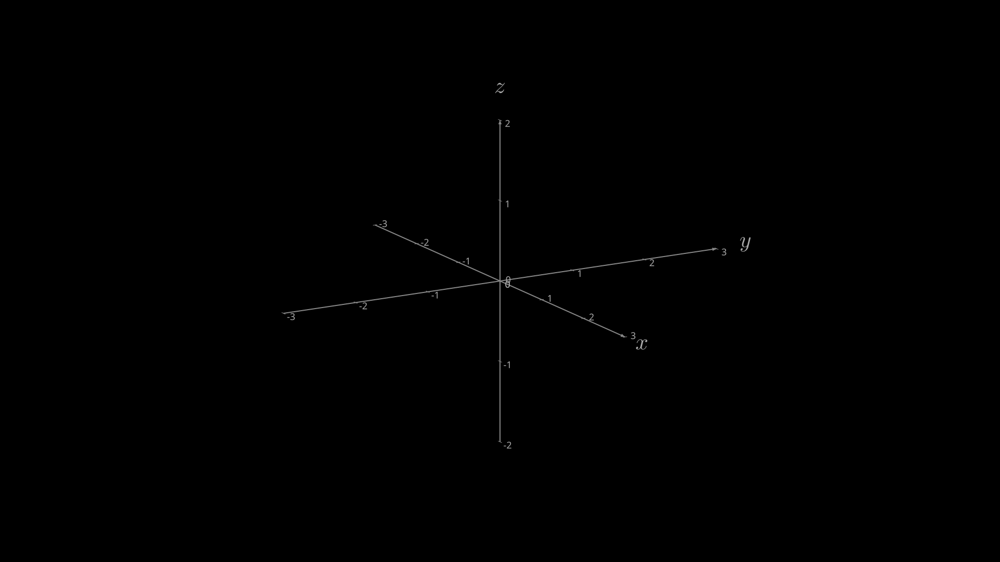
"""ThreeDAxes: basic 3D coordinate system."""
from vectormation.objects import *
v = VectorMathAnim()
v.set_background()
axes = ThreeDAxes(x_range=(-3, 3), y_range=(-3, 3), z_range=(-2, 2))
v.add(axes)
v.show(end=0)
ThreeDAxes¶
- class ThreeDAxes(x_range=(-3, 3), y_range=(-3, 3), z_range=(-2, 2), cx=960, cy=540, scale=160, phi=75deg, theta=-30deg, show_ticks=True, show_labels=True, show_grid=False, x_label='x', y_label='y', z_label='z', **styling)¶
Three-dimensional coordinate axes with camera control, ticks, labels, and depth-sorted rendering.
Bases:
VCollection- Parameters:
x_range (tuple) –
(min, max)for the x-axis.y_range (tuple) –
(min, max)for the y-axis.z_range (tuple) –
(min, max)for the z-axis.cx (float) – Screen centre x (default
960).cy (float) – Screen centre y (default
540).scale (float) – Pixels per math unit (default
160).phi (float) – Camera elevation in radians (default
math.radians(75)).theta (float) – Camera azimuth in radians (default
math.radians(-30)).show_ticks (bool) – Draw tick marks on axes (default
True).show_labels (bool) – Draw numeric tick labels (default
True).show_grid (bool) – Draw ground-plane grid lines (default
False).x_label (str) – Label for x-axis, or
Noneto hide.y_label (str) – Label for y-axis, or
Noneto hide.z_label (str) – Label for z-axis, or
Noneto hide.
Camera Methods
- set_camera_orientation(start, end, phi=None, theta=None, easing=smooth)¶
Animate camera elevation and/or azimuth over
[start, end].- Parameters:
phi (float) – Target elevation in radians, or
Noneto keep current.theta (float) – Target azimuth in radians, or
Noneto keep current.
Example: Rotating camera to top-down view
# Rotate camera to a top-down view over 3 seconds axes.set_camera_orientation(0, 3, phi=0, theta=0)
Example: Camera Rotation
"""Animated camera rotation with set_camera_orientation.""" from vectormation.objects import * import math v = VectorMathAnim() v.set_background() axes = ThreeDAxes(x_range=(-3, 3), y_range=(-3, 3), z_range=(-2, 2)) axes.plot_surface(lambda x, y: math.sin(x) * math.cos(y), resolution=(20, 20), fill_color='#58C4DD') axes.set_camera_orientation(0, 3, phi=math.radians(30), theta=math.radians(-120)) v.add(axes) v.show(end=3)
- begin_ambient_camera_rotation(start=0, end=None, rate=0.1)¶
Continuously rotate the camera theta at rate radians per second. If end is
None, the rotation continues indefinitely.- Parameters:
rate (float) – Angular velocity in radians/second.
Example: Ambient camera rotation
# Slowly orbit the scene for the entire animation axes.begin_ambient_camera_rotation(start=0, rate=0.15)
Example: Ambient Camera Rotation
"""Ambient camera rotation around a 3D scene.""" from vectormation.objects import * v = VectorMathAnim() v.set_background() axes = ThreeDAxes(x_range=(-3, 3), y_range=(-3, 3), z_range=(-2, 2)) sphere = Sphere3D(radius=1.5, checkerboard_colors=('#FC6255', '#c44030')) axes.add_surface(sphere) axes.begin_ambient_camera_rotation(start=0, rate=0.3) v.add(axes) v.show(end=4)
- set_camera_preset(name, start=0, end=0.5, easing=smooth)¶
Animate camera to a named preset orientation.
- Parameters:
name (str) – One of
'default','isometric','front','top','side'.
Preset values:
Name
phi
theta
default75 deg
-30 deg
isometric54.7 deg
-45 deg
front90 deg
0 deg
top0 deg
0 deg
side90 deg
-90 deg
- set_camera_zoom(factor, start=0, end=1, easing=smooth)¶
Animate the 3D camera zoom (scale multiplier) over
[start, end].- Parameters:
factor (float) – Multiply the current scale by this factor.
Example: Zooming in on a 3D scene
# Zoom in 2x over 2 seconds axes.set_camera_zoom(2.0, start=0, end=2)
Example: 3D Camera Zoom
"""Zooming in on a 3D scene with set_camera_zoom.""" from vectormation.objects import * v = VectorMathAnim() v.set_background() axes = ThreeDAxes(x_range=(-3, 3), y_range=(-3, 3), z_range=(-2, 2)) faces = Cube(side_length=2, fill_color='#58C4DD') for face in faces: axes.add_surface(face) axes.set_camera_zoom(2.0, start=0, end=2) v.add(axes) v.show(end=2)
Projection
- project_point(x, y, z, time=0)¶
Project a 3D point to screen coordinates using the current camera.
- Returns:
(svg_x, svg_y, depth)
- coords_to_point(x, y, z=0, time=0)¶
Convert 3D math coordinates to 2D SVG pixel coordinates.
- Returns:
(svg_x, svg_y)
Lighting
- set_light_direction(x, y, z)¶
Set the light direction vector for Lambertian shading on surfaces. The vector is normalized internally.
- Parameters:
x (float) – Light direction x-component.
y (float) – Light direction y-component.
z (float) – Light direction z-component.
The default light direction is
(0.5, -0.5, 0.7071).Example: Setting light direction
# Light from directly above axes.set_light_direction(0, 0, 1)
Example: Light Direction
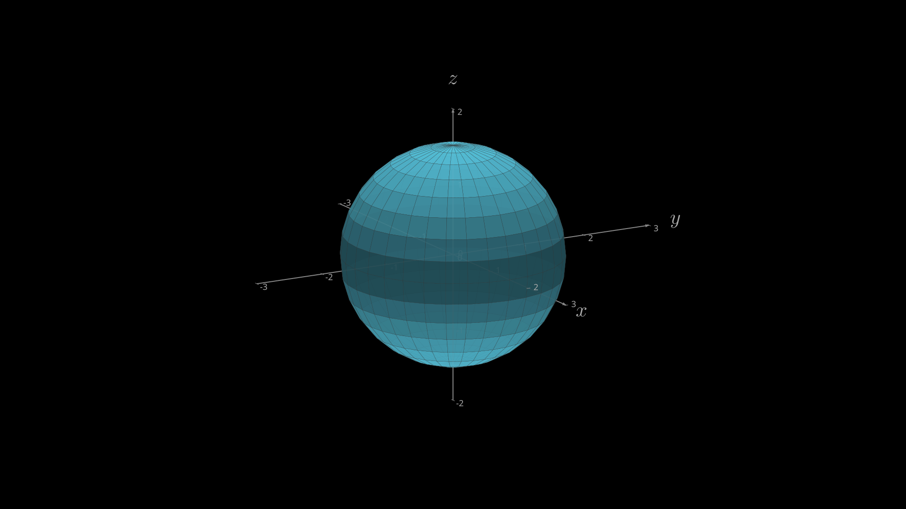
"""Different light directions on a 3D surface.""" from vectormation.objects import * v = VectorMathAnim() v.set_background() axes = ThreeDAxes(x_range=(-3, 3), y_range=(-3, 3), z_range=(-2, 2)) axes.set_light_direction(0, 0, 1) # Light from directly above sphere = Sphere3D(radius=1.5, fill_color='#58C4DD') axes.add_surface(sphere) v.add(axes) v.show(end=0)
Adding Surfaces
- add_surface(surface)¶
Register a
Surfacefor depth-sorted rendering.- Parameters:
surface (Surface) – The surface to add.
Example: Adding a sphere surface
sphere = Sphere3D(radius=1.5) axes.add_surface(sphere)
Example: Sphere Surface
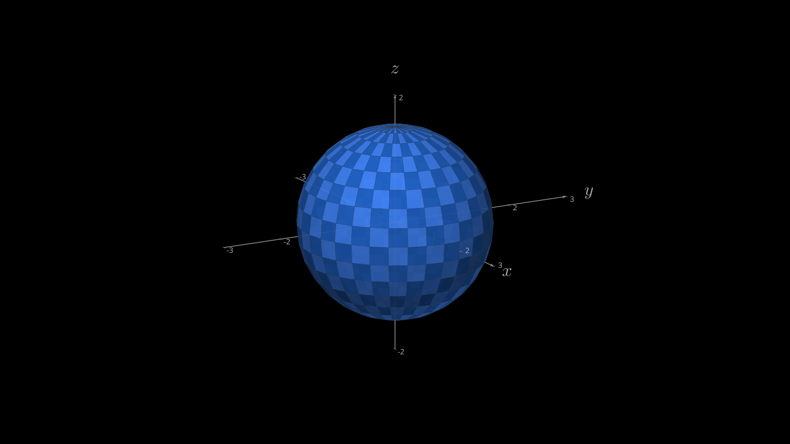
"""Adding a sphere surface via add_surface.""" from vectormation.objects import * v = VectorMathAnim() v.set_background() axes = ThreeDAxes(x_range=(-3, 3), y_range=(-3, 3), z_range=(-2, 2)) sphere = Sphere3D(radius=1.5, checkerboard_colors=('#4488ff', '#2266cc')) axes.add_surface(sphere) v.add(axes) v.show(end=0)
- plot_surface(func, u_range=None, v_range=None, resolution=(20, 20), fill_color='#4488ff', checkerboard_colors=None, stroke_color='#333', stroke_width=0.5, fill_opacity=0.8)¶
Create and register a Surface. If u_range or v_range is
None, the corresponding axis range is used. Returns theSurface.- Parameters:
func (callable) –
z = func(x, y)or(x, y, z) = func(u, v).resolution (tuple) –
(u_steps, v_steps)grid resolution.fill_color (str) – Base fill colour.
checkerboard_colors (tuple) – Optional
(color_a, color_b)pair.
Example: Plotting a Gaussian surface
import math def gaussian(x, y): return math.exp(-(x**2 + y**2) / 0.32) axes.plot_surface(gaussian, resolution=(24, 24), checkerboard_colors=('#FF862F', '#4488ff'))
Example: Gaussian Surface
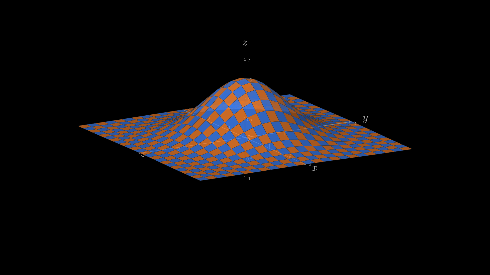
"""Gaussian surface plot on ThreeDAxes.""" from vectormation.objects import * import math v = VectorMathAnim() v.set_background() axes = ThreeDAxes(x_range=(-3, 3), y_range=(-3, 3), z_range=(-1, 2)) axes.plot_surface(lambda x, y: 1.5 * math.exp(-(x**2 + y**2) / 2), resolution=(24, 24), checkerboard_colors=('#FF862F', '#4488ff')) v.add(axes) v.show(end=0)
Adding Primitives
- add_3d(obj)¶
Register a 3D primitive (
Line3D,Dot3D,Arrow3D,ParametricCurve3D,Text3D) for depth-sorted rendering.Example: Adding 3D primitives
axes.add_3d(Dot3D((1, 0, 0), radius=6, fill='#FC6255')) axes.add_3d(Line3D((0, 0, 0), (2, 1, 3), stroke='#FFFF00'))
3D Curves
- get_graph_3d(func, x_range=None, plane='xz', num_points=100, stroke='#FFFF00', stroke_width=2)¶
Plot a 2D function as a 3D curve in the specified plane. Returns a
ParametricCurve3D.- Parameters:
func (callable) –
y = func(x)orz = func(x)depending on plane.plane (str) –
'xz'(default),'xy', or'yz'.
Example: 3D function curve
import math curve = axes.get_graph_3d(math.sin, plane='xz', stroke='#83C167')
Example: 3D Function Curve
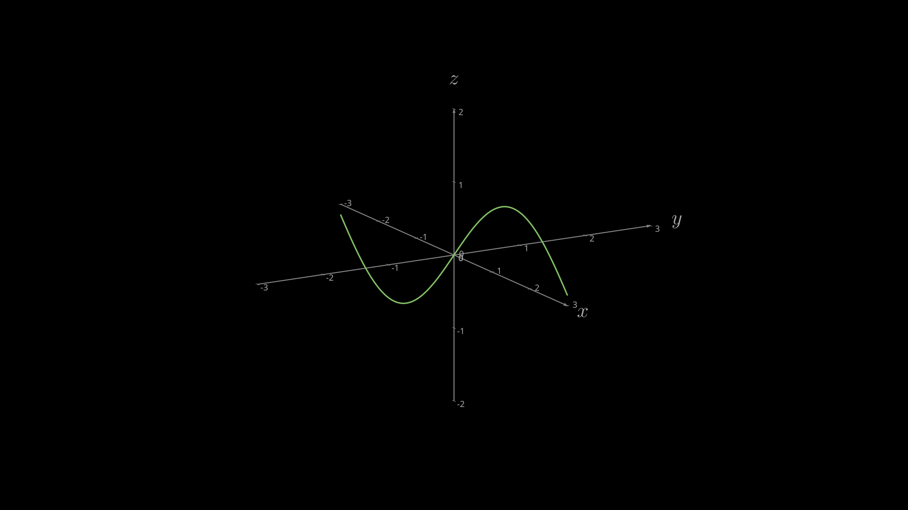
"""3D function curve using get_graph_3d.""" from vectormation.objects import * import math v = VectorMathAnim() v.set_background() axes = ThreeDAxes(x_range=(-3, 3), y_range=(-3, 3), z_range=(-2, 2)) curve = axes.get_graph_3d(math.sin, plane='xz', stroke='#83C167', stroke_width=3) v.add(axes) v.show(end=0)
Wireframe Surfaces
- plot_surface_wireframe(func, x_steps=20, y_steps=20, **styling)¶
Render a
z = func(x, y)surface as a wireframe mesh.- Parameters:
x_steps (int) – Grid resolution along x.
y_steps (int) – Grid resolution along y.
- plot_parametric_surface(func, u_range=(0, tau), v_range=(0, pi), u_steps=32, v_steps=16, **styling)¶
Plot a parametric surface
(x, y, z) = func(u, v)as a wireframe.
Grid Planes
- add_grid_plane(plane='xz', step=1, color='#444444', opacity=0.3, stroke_width=0.5)¶
Add a grid plane to the 3D axes.
- Parameters:
plane (str) –
'xz','xy', or'yz'.step (float) – Grid line spacing in math units.
Example: 3D surface with camera rotation
Gaussian surface with ambient camera rotation.
"""3D surface with camera rotation.""" from vectormation.objects import * import math v = VectorMathAnim() v.set_background() axes = ThreeDAxes(x_range=(-3, 3), y_range=(-3, 3), z_range=(-1, 2)) axes.plot_surface(lambda x, y: math.exp(-(x**2 + y**2) / 2), resolution=(20, 20), checkerboard_colors=('#FF862F', '#4488ff')) axes.begin_ambient_camera_rotation(start=0, rate=0.3) v.add(axes) v.show(end=6)
Surface¶
- class Surface(func, u_range=(-3, 3), v_range=(-3, 3), resolution=(20, 20), fill_color='#4488ff', checkerboard_colors=None, stroke_color='#333', stroke_width=0.5, fill_opacity=0.8)¶
Filled quad surface with Lambertian shading and depth sorting.
Surfaces auto-detect whether the given function is a height-map or parametric form:
Height-map –
func(x, y) -> z:Example: Height-map surface
def paraboloid(x, y): return x**2 + y**2 surface = Surface(paraboloid, u_range=(-2, 2), v_range=(-2, 2)) axes.add_surface(surface)
Parametric –
func(u, v) -> (x, y, z):Example: Parametric Mobius strip
import math def mobius(u, v): x = (1 + v/2 * math.cos(u/2)) * math.cos(u) y = (1 + v/2 * math.cos(u/2)) * math.sin(u) z = v/2 * math.sin(u/2) return (x, y, z) surface = Surface(mobius, u_range=(0, math.tau), v_range=(-0.5, 0.5), resolution=(40, 8), fill_color='#58C4DD') axes.add_surface(surface)
- Parameters:
func (callable) – Height-map or parametric function.
u_range (tuple) –
(min, max)for the u parameter.v_range (tuple) –
(min, max)for the v parameter.resolution (tuple) –
(u_steps, v_steps)– number of quad subdivisions.fill_color (str) – Base fill colour (hex).
checkerboard_colors (tuple) – Optional
(color_a, color_b)pair for alternating face colours.stroke_color (str) – Quad edge colour.
stroke_width (float) – Quad edge width (set to
0for no edges).fill_opacity (float) – Fill opacity (0–1).
- set_checkerboard(color_a, color_b)¶
Update the checkerboard colours for this surface. Returns self.
Example: Setting checkerboard colours
surface.set_checkerboard('#FC6255', '#c44030')
Example: Height-map Surface
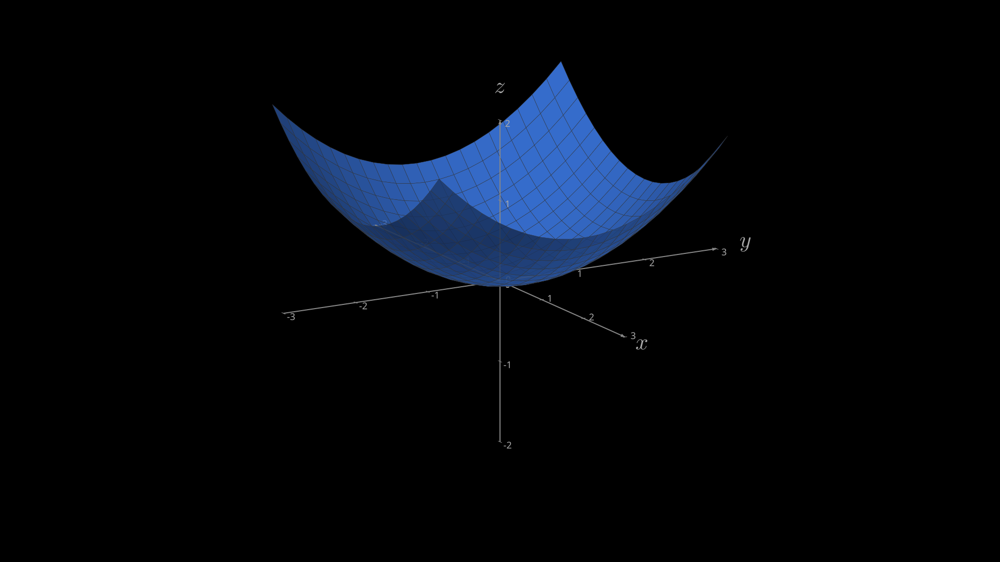
"""Height-map surface (z = f(x, y)).""" from vectormation.objects import * v = VectorMathAnim() v.set_background() axes = ThreeDAxes(x_range=(-3, 3), y_range=(-3, 3), z_range=(-2, 2)) def paraboloid(x, y): return (x**2 + y**2) / 4 surface = Surface(paraboloid, u_range=(-2, 2), v_range=(-2, 2), resolution=(20, 20), fill_color='#4488ff') axes.add_surface(surface) v.add(axes) v.show(end=0)
Example: Mobius Strip
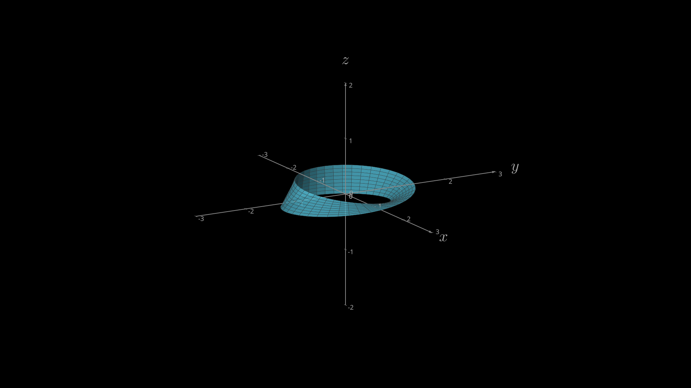
"""Parametric Mobius strip surface.""" from vectormation.objects import * import math v = VectorMathAnim() v.set_background() axes = ThreeDAxes(x_range=(-3, 3), y_range=(-3, 3), z_range=(-2, 2)) def mobius(u, v): x = (1 + v / 2 * math.cos(u / 2)) * math.cos(u) y = (1 + v / 2 * math.cos(u / 2)) * math.sin(u) z = v / 2 * math.sin(u / 2) return (x, y, z) surface = Surface(mobius, u_range=(0, math.tau), v_range=(-0.5, 0.5), resolution=(40, 8), fill_color='#58C4DD') axes.add_surface(surface) v.add(axes) v.show(end=0)
Example: Checkerboard Surface
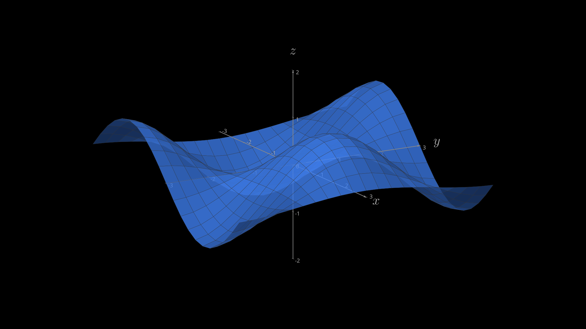
"""Checkerboard surface colours.""" from vectormation.objects import * import math v = VectorMathAnim() v.set_background() axes = ThreeDAxes(x_range=(-3, 3), y_range=(-3, 3), z_range=(-2, 2)) surface = Surface(lambda x, y: math.sin(x) * math.cos(y), u_range=(-3, 3), v_range=(-3, 3), resolution=(20, 20)) surface.set_checkerboard('#FC6255', '#c44030') axes.add_surface(surface) v.add(axes) v.show(end=0)
Example: Wireframe Surface
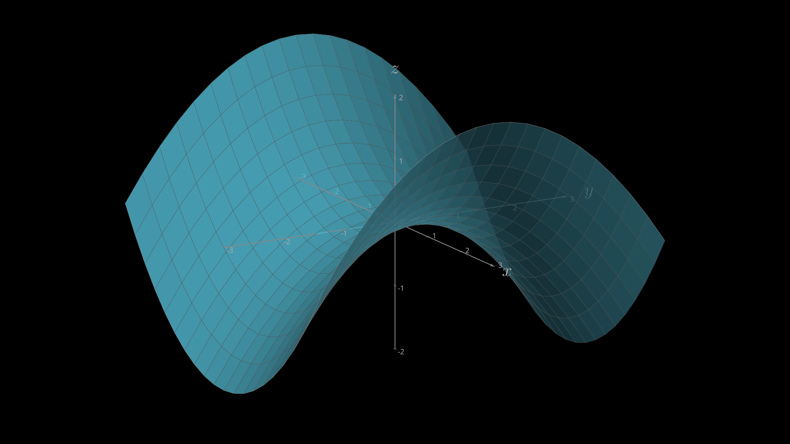
"""Surface with wireframe mesh overlay using SurfaceMesh.""" from vectormation.objects import * v = VectorMathAnim() v.set_background() axes = ThreeDAxes(x_range=(-3, 3), y_range=(-3, 3), z_range=(-2, 2)) def saddle(x, y): return (x**2 - y**2) / 4 surface = Surface(saddle, resolution=(20, 20), fill_color='#58C4DD', fill_opacity=0.8) mesh = SurfaceMesh(surface, stroke_color='#ffffff', stroke_opacity=0.3) axes.add_surface(surface) axes.add_surface(mesh) v.add(axes) v.show(end=0)
SurfaceMesh¶
- class SurfaceMesh(surface, resolution=None, stroke_color='#ffffff', stroke_width=1, stroke_opacity=0.4, creation=0, z=0)¶
Wireframe mesh overlay for a
Surface, showing grid lines without fill. Inherits fromSurfacebut renders only line segments along the U and V directions of the parameter grid.- Parameters:
surface (Surface) – The surface to overlay with a mesh.
resolution (tuple) –
(u_steps, v_steps)grid resolution, orNoneto match the underlying surface’s resolution.stroke_color (str) – Line colour (default
'#ffffff').stroke_width (float) – Line width (default
1).stroke_opacity (float) – Line opacity (default
0.4).
Example: Surface with wireframe mesh overlay
import math def saddle(x, y): return (x**2 - y**2) / 4 surface = Surface(saddle, resolution=(20, 20), fill_color='#58C4DD', fill_opacity=0.8) mesh = SurfaceMesh(surface, stroke_color='#ffffff', stroke_opacity=0.3) axes.add_surface(surface) axes.add_surface(mesh)
3D Primitives¶
All primitives support show, z, copy(), shift(dx, dy, dz),
move_to(x, y, z), and set_color(color).
Example: 3D primitives
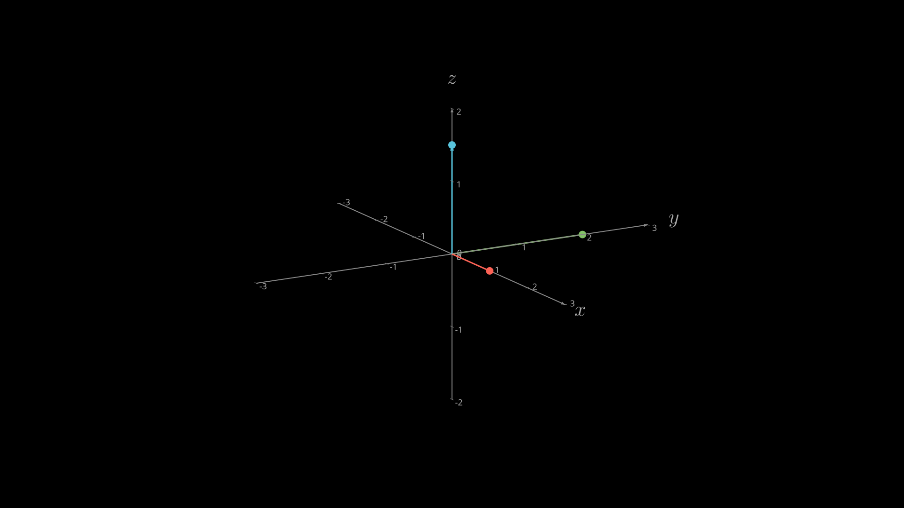
Dot, line, and arrow in 3D space.
"""3D primitives: dot, line, arrow."""
from vectormation.objects import *
v = VectorMathAnim()
v.set_background()
axes = ThreeDAxes(x_range=(-3, 3), y_range=(-3, 3), z_range=(-2, 2))
axes.add_3d(Dot3D((1, 0, 0), radius=8, fill='#FC6255'))
axes.add_3d(Dot3D((0, 2, 0), radius=8, fill='#83C167'))
axes.add_3d(Dot3D((0, 0, 1.5), radius=8, fill='#58C4DD'))
axes.add_3d(Line3D((0, 0, 0), (1, 0, 0), stroke='#FC6255', stroke_width=3))
axes.add_3d(Line3D((0, 0, 0), (0, 2, 0), stroke='#83C167', stroke_width=3))
axes.add_3d(Arrow3D((0, 0, 0), (0, 0, 1.5), stroke='#58C4DD', stroke_width=3))
v.add(axes)
v.show(end=2)
Example: 3D Primitives
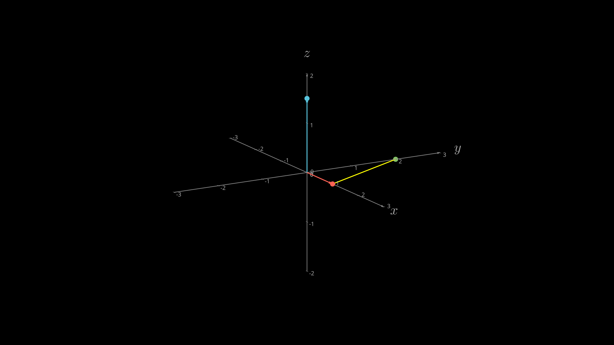
"""Multiple 3D primitives: Line3D, Dot3D, Arrow3D together."""
from vectormation.objects import *
v = VectorMathAnim()
v.set_background()
axes = ThreeDAxes(x_range=(-3, 3), y_range=(-3, 3), z_range=(-2, 2))
axes.add_3d(Dot3D((1, 0, 0), radius=8, fill='#FC6255'))
axes.add_3d(Dot3D((0, 2, 0), radius=8, fill='#83C167'))
axes.add_3d(Dot3D((0, 0, 1.5), radius=8, fill='#58C4DD'))
axes.add_3d(Line3D((1, 0, 0), (0, 2, 0), stroke='#FFFF00', stroke_width=3))
axes.add_3d(Arrow3D((0, 0, 0), (0, 0, 1.5), stroke='#58C4DD', stroke_width=3))
axes.add_3d(Arrow3D((0, 0, 0), (1, 0, 0), stroke='#FC6255', stroke_width=3))
v.add(axes)
v.show(end=0)
Line3D¶
- class Line3D(start, end, stroke='#fff', stroke_width=2)¶
Line segment in 3D space.
- Parameters:
start (tuple) –
(x, y, z)start point.end (tuple) –
(x, y, z)end point.stroke (str) – Stroke colour.
stroke_width (float) – Stroke width.
- get_midpoint()¶
Return the 3D midpoint as
(x, y, z).
- get_length()¶
Return the Euclidean length.
Example: Line segment in 3D
line = Line3D((0, 0, 0), (2, 1, 3), stroke='#FFFF00') axes.add_3d(line)
Example: Line3D
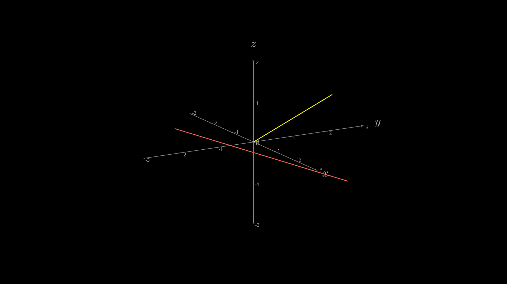
"""Line3D segment in 3D space.""" from vectormation.objects import * v = VectorMathAnim() v.set_background() axes = ThreeDAxes(x_range=(-3, 3), y_range=(-3, 3), z_range=(-2, 2)) axes.add_3d(Line3D((0, 0, 0), (2, 1, 1.5), stroke='#FFFF00', stroke_width=3)) axes.add_3d(Line3D((-2, -1, 0), (1, 2, -1), stroke='#FC6255', stroke_width=3)) v.add(axes) v.show(end=0)
Arrow3D¶
- class Arrow3D(start, end, stroke='#fff', stroke_width=2, tip_length=12, tip_radius=4)¶
Arrow in 3D space with a triangular tip.
- Parameters:
start (tuple) –
(x, y, z)tail point.end (tuple) –
(x, y, z)tip point.stroke (str) – Shaft and tip colour.
tip_length (float) – Length of the arrowhead in pixels.
tip_radius (float) – Half-width of the arrowhead in pixels.
- get_midpoint()¶
Return the 3D midpoint as
(x, y, z).
- get_length()¶
Return the Euclidean length of the shaft.
Example: Arrow in 3D space
arrow = Arrow3D((0, 0, 0), (1, 1, 2), stroke='#FC6255', tip_length=14, tip_radius=5) axes.add_3d(arrow)
Example: Arrow3D
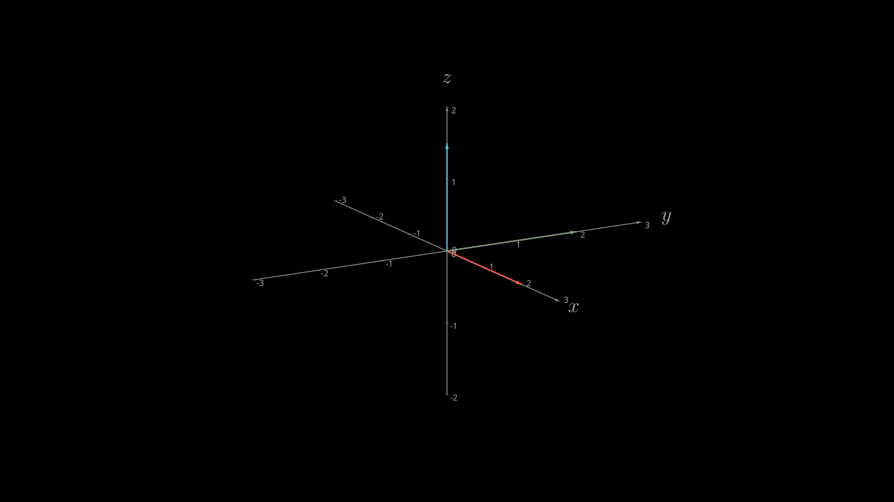
"""Arrow3D in 3D space.""" from vectormation.objects import * v = VectorMathAnim() v.set_background() axes = ThreeDAxes(x_range=(-3, 3), y_range=(-3, 3), z_range=(-2, 2)) axes.add_3d(Arrow3D((0, 0, 0), (2, 0, 0), stroke='#FC6255', stroke_width=3)) axes.add_3d(Arrow3D((0, 0, 0), (0, 2, 0), stroke='#83C167', stroke_width=3)) axes.add_3d(Arrow3D((0, 0, 0), (0, 0, 1.5), stroke='#58C4DD', stroke_width=3)) v.add(axes) v.show(end=0)
Dot3D¶
- class Dot3D(point=(0, 0, 0), radius=5, fill='#fff')¶
Filled circle in 3D space.
- Parameters:
point (tuple) –
(x, y, z)position.radius (float) – Circle radius in pixels.
fill (str) – Fill colour.
- get_position()¶
Return the 3D position as
(x, y, z).
- set_radius(radius)¶
Set the dot radius. Returns self.
Example: Dot in 3D space
dot = Dot3D((1, 0, 0), radius=6, fill='#83C167') axes.add_3d(dot)
Example: Dot3D
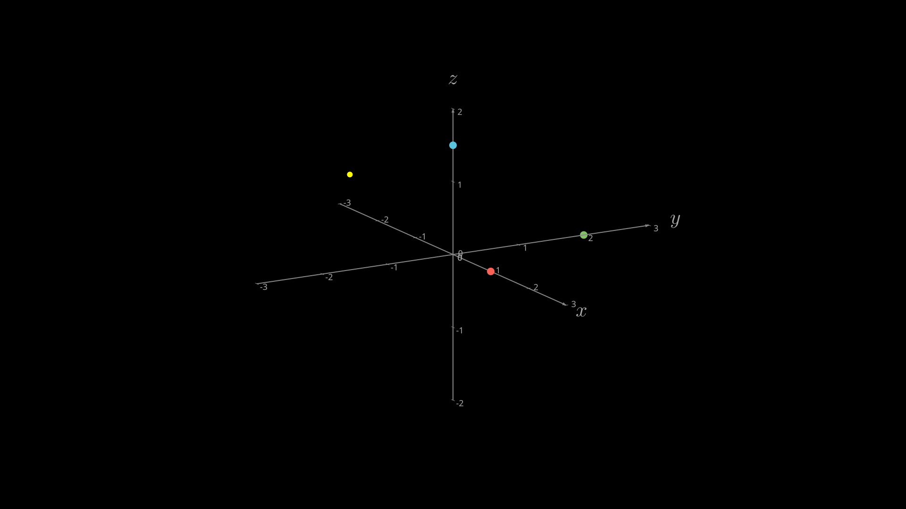
"""Dot3D in 3D space.""" from vectormation.objects import * v = VectorMathAnim() v.set_background() axes = ThreeDAxes(x_range=(-3, 3), y_range=(-3, 3), z_range=(-2, 2)) axes.add_3d(Dot3D((1, 0, 0), radius=8, fill='#FC6255')) axes.add_3d(Dot3D((0, 2, 0), radius=8, fill='#83C167')) axes.add_3d(Dot3D((0, 0, 1.5), radius=8, fill='#58C4DD')) axes.add_3d(Dot3D((-1, -1, 1), radius=6, fill='#FFFF00')) v.add(axes) v.show(end=0)
ParametricCurve3D¶
- class ParametricCurve3D(func, t_range=(0, 1), num_points=100, stroke='#fff', stroke_width=2)¶
Parametric curve
func(t) -> (x, y, z)sampled at num_points points.- Parameters:
func (callable) – Function mapping
tto(x, y, z).t_range (tuple) –
(t_min, t_max)parameter range.num_points (int) – Number of sample points.
stroke (str) – Stroke colour.
stroke_width (float) – Stroke width.
Example: Parametric helix curve
import math def helix(t): return (math.cos(t), math.sin(t), t / (2 * math.pi)) curve = ParametricCurve3D(helix, t_range=(0, 4 * math.pi), num_points=200, stroke='#FFFF00', stroke_width=3) axes.add_3d(curve)
Example: Helix Curve
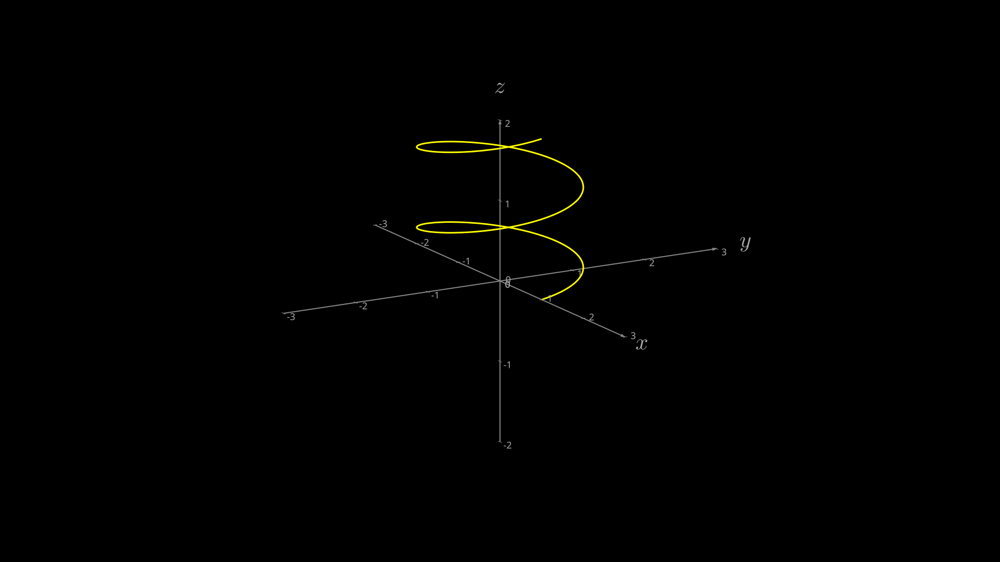
"""ParametricCurve3D helix.""" from vectormation.objects import * import math v = VectorMathAnim() v.set_background() axes = ThreeDAxes(x_range=(-3, 3), y_range=(-3, 3), z_range=(-2, 2)) def helix(t): return (math.cos(t), math.sin(t), t / (2 * math.pi)) curve = ParametricCurve3D(helix, t_range=(0, 4 * math.pi), num_points=200, stroke='#FFFF00', stroke_width=3) axes.add_3d(curve) v.add(axes) v.show(end=0)
Text3D¶
- class Text3D(text, point=(0, 0, 0), font_size=20, fill='#fff')¶
Text label placed at a 3D position. The label always faces the camera (billboard style).
- Parameters:
text (str) – Displayed text string.
point (tuple) –
(x, y, z)position.font_size (float) – Font size in pixels.
fill (str) – Text fill colour.
- get_position()¶
Return the 3D position as
(x, y, z).
- set_text(text)¶
Update the displayed text. Returns self.
Example: Text label in 3D
label = Text3D('Origin', point=(0, 0, 0), font_size=18) axes.add_3d(label)
Example: Text3D
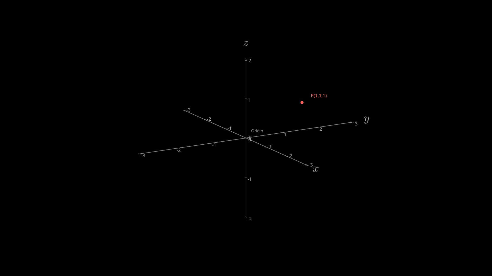
"""Text3D label in 3D space.""" from vectormation.objects import * v = VectorMathAnim() v.set_background() axes = ThreeDAxes(x_range=(-3, 3), y_range=(-3, 3), z_range=(-2, 2)) axes.add_3d(Dot3D((1, 1, 1), radius=6, fill='#FC6255')) axes.add_3d(Text3D('P(1,1,1)', point=(1.3, 1.3, 1.2), font_size=18, fill='#FC6255')) axes.add_3d(Text3D('Origin', point=(0.2, 0.2, 0.2), font_size=16, fill='#aaaaaa')) v.add(axes) v.show(end=0)
3D Factory Functions¶
Factory functions create pre-built Surface objects (or lists of
them) for common shapes. They all accept fill_color, stroke_color,
stroke_width, fill_opacity, checkerboard_colors, creation,
and z keyword arguments.
Sphere3D¶
- Sphere3D(radius=1.5, center=(0, 0, 0), resolution=(16, 32), **kwargs)¶
Create a sphere
Surface.- Parameters:
radius (float) – Sphere radius in math units.
center (tuple) –
(x, y, z)centre.resolution (tuple) –
(lat_steps, lon_steps)grid resolution.
- Returns:
Default fill:
#FC6255.Example: Creating a sphere
sphere = Sphere3D(radius=1.5, checkerboard_colors=('#FC6255', '#c44030')) axes.add_surface(sphere)
Example: Sphere3D
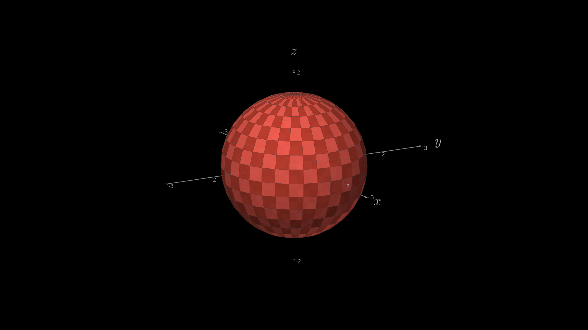
"""Sphere3D on ThreeDAxes.""" from vectormation.objects import * v = VectorMathAnim() v.set_background() axes = ThreeDAxes(x_range=(-3, 3), y_range=(-3, 3), z_range=(-2, 2)) sphere = Sphere3D(radius=1.5, checkerboard_colors=('#FC6255', '#c44030')) axes.add_surface(sphere) v.add(axes) v.show(end=0)
Cube¶
- Cube(side_length=2, center=(0, 0, 0), **kwargs)¶
Create a cube as a list of 6 flat
Surfaceobjects (one per face).- Parameters:
side_length (float) – Edge length in math units.
center (tuple) –
(x, y, z)centre.
- Returns:
list[Surface]
Default fill:
#58C4DD.Example: Creating a cube
faces = Cube(side_length=2) for face in faces: axes.add_surface(face)
Example: Cube
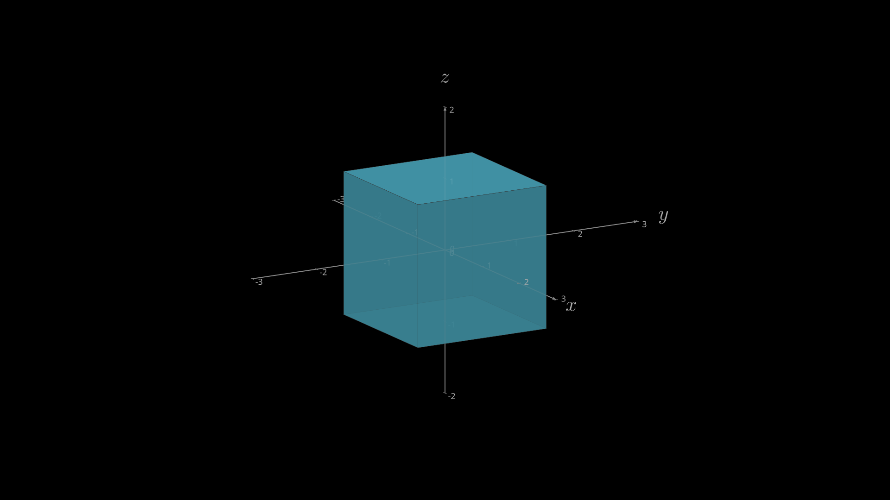
"""Cube on ThreeDAxes.""" from vectormation.objects import * v = VectorMathAnim() v.set_background() axes = ThreeDAxes(x_range=(-3, 3), y_range=(-3, 3), z_range=(-2, 2)) faces = Cube(side_length=2, fill_color='#58C4DD') for face in faces: axes.add_surface(face) v.add(axes) v.show(end=0)
Cylinder3D¶
- Cylinder3D(radius=1, height=2, center=(0, 0, 0), resolution=(16, 16), **kwargs)¶
Create an open-ended cylinder (side surface only) as a
Surface.- Parameters:
radius (float) – Cylinder radius.
height (float) – Cylinder height.
center (tuple) –
(x, y, z)centre.resolution (tuple) –
(angular_steps, height_steps)grid resolution.
- Returns:
Default fill:
#58C4DD.Example: Cylinder3D
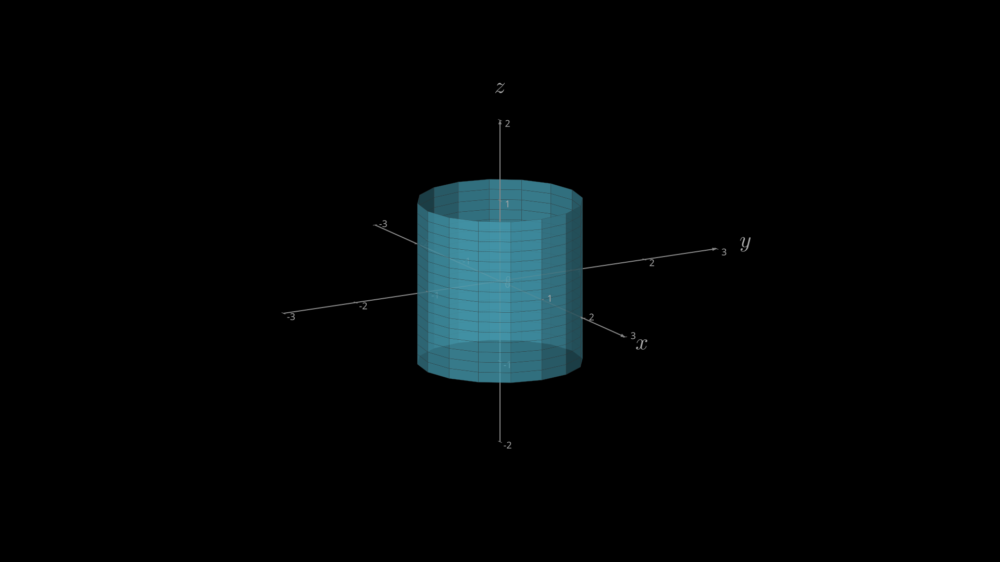
"""Cylinder3D on ThreeDAxes.""" from vectormation.objects import * v = VectorMathAnim() v.set_background() axes = ThreeDAxes(x_range=(-3, 3), y_range=(-3, 3), z_range=(-2, 2)) cylinder = Cylinder3D(radius=1, height=2, fill_color='#58C4DD', fill_opacity=0.8) axes.add_surface(cylinder) v.add(axes) v.show(end=0)
Cone3D¶
- Cone3D(radius=1, height=2, center=(0, 0, 0), resolution=(16, 16), **kwargs)¶
Create an open-ended cone (side surface only) as a
Surface.- Parameters:
radius (float) – Base radius.
height (float) – Cone height.
center (tuple) –
(x, y, z)centre.resolution (tuple) –
(angular_steps, height_steps)grid resolution.
- Returns:
Default fill:
#58C4DD.Example: Cone3D
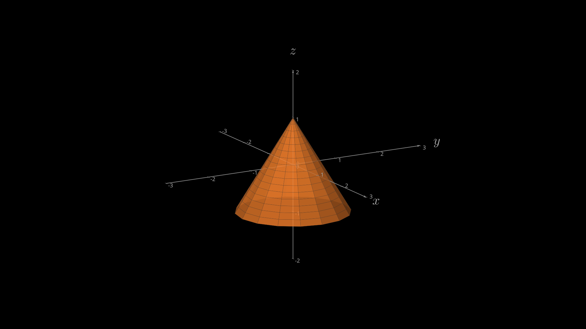
"""Cone3D on ThreeDAxes.""" from vectormation.objects import * v = VectorMathAnim() v.set_background() axes = ThreeDAxes(x_range=(-3, 3), y_range=(-3, 3), z_range=(-2, 2)) cone = Cone3D(radius=1.2, height=2, fill_color='#FF862F', fill_opacity=0.8) axes.add_surface(cone) v.add(axes) v.show(end=0)
Torus3D¶
- Torus3D(major_radius=2, minor_radius=0.5, center=(0, 0, 0), resolution=(24, 12), **kwargs)¶
Create a torus
Surface.- Parameters:
major_radius (float) – Distance from torus centre to tube centre.
minor_radius (float) – Tube radius.
center (tuple) –
(x, y, z)centre.resolution (tuple) –
(major_steps, minor_steps)grid resolution.
- Returns:
Default fill:
#58C4DD.Example: Torus3D
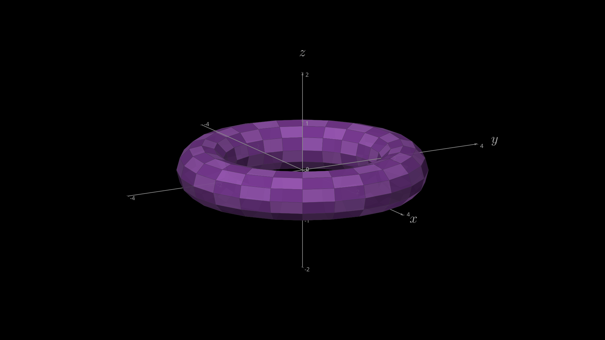
"""Torus3D on ThreeDAxes.""" from vectormation.objects import * v = VectorMathAnim() v.set_background() axes = ThreeDAxes(x_range=(-4, 4), y_range=(-4, 4), z_range=(-2, 2)) torus = Torus3D(major_radius=2, minor_radius=0.5, checkerboard_colors=('#9B59B6', '#7D3C98')) axes.add_surface(torus) v.add(axes) v.show(end=0)
Prism3D¶
- Prism3D(n_sides=6, radius=1, height=2, center=(0, 0, 0), **kwargs)¶
Create a prism with an n-sided polygon cross-section. Returns a list of
Surfaceobjects (side faces + top and bottom caps).- Parameters:
n_sides (int) – Number of sides of the polygon base.
radius (float) – Circumscribed radius of the polygon.
height (float) – Prism height.
center (tuple) –
(x, y, z)centre.
- Returns:
list[Surface]
Default fill:
#58C4DD.Example: Prism3D
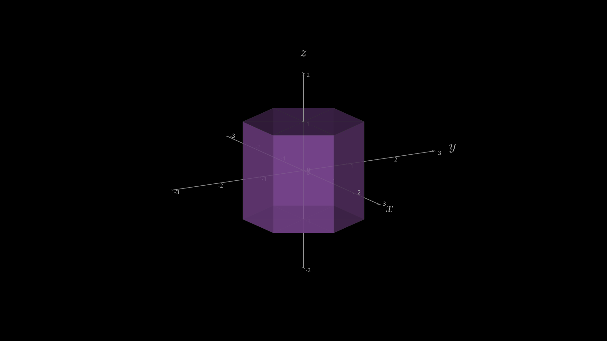
"""Prism3D (hexagonal) on ThreeDAxes.""" from vectormation.objects import * v = VectorMathAnim() v.set_background() axes = ThreeDAxes(x_range=(-3, 3), y_range=(-3, 3), z_range=(-2, 2)) faces = Prism3D(n_sides=6, radius=1.2, height=2, fill_color='#9B59B6') for face in faces: axes.add_surface(face) v.add(axes) v.show(end=0)
Platonic Solids¶
The Platonic solid factories create lists of flat Surface objects
(one per face). They all accept fill_color, stroke_color,
stroke_width, fill_opacity, creation, and z keyword arguments.
Tetrahedron¶
- Tetrahedron(cx=0, cy=0, cz=0, size=1.0, **kwargs)¶
Regular tetrahedron (4 triangular faces).
- Parameters:
cx (float) – Centre x.
cy (float) – Centre y.
cz (float) – Centre z.
size (float) – Scale factor applied to vertex coordinates.
- Returns:
list[Surface]
Default fill:
#58C4DD, default stroke:#FFFFFF.Example: Creating a tetrahedron
faces = Tetrahedron(size=1.2, fill_color='#FC6255') for face in faces: axes.add_surface(face)
Example: Tetrahedron
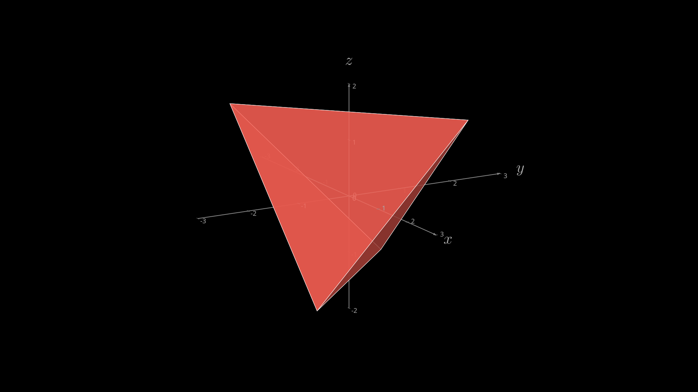
"""Tetrahedron on ThreeDAxes.""" from vectormation.objects import * v = VectorMathAnim() v.set_background() axes = ThreeDAxes(x_range=(-3, 3), y_range=(-3, 3), z_range=(-2, 2)) faces = Tetrahedron(size=1.5, fill_color='#FC6255') for face in faces: axes.add_surface(face) v.add(axes) v.show(end=0)
Octahedron¶
- Octahedron(cx=0, cy=0, cz=0, size=1.0, **kwargs)¶
Regular octahedron (8 triangular faces).
- Parameters:
cx (float) – Centre x.
cy (float) – Centre y.
cz (float) – Centre z.
size (float) – Scale factor applied to vertex coordinates.
- Returns:
list[Surface]
Example: Octahedron
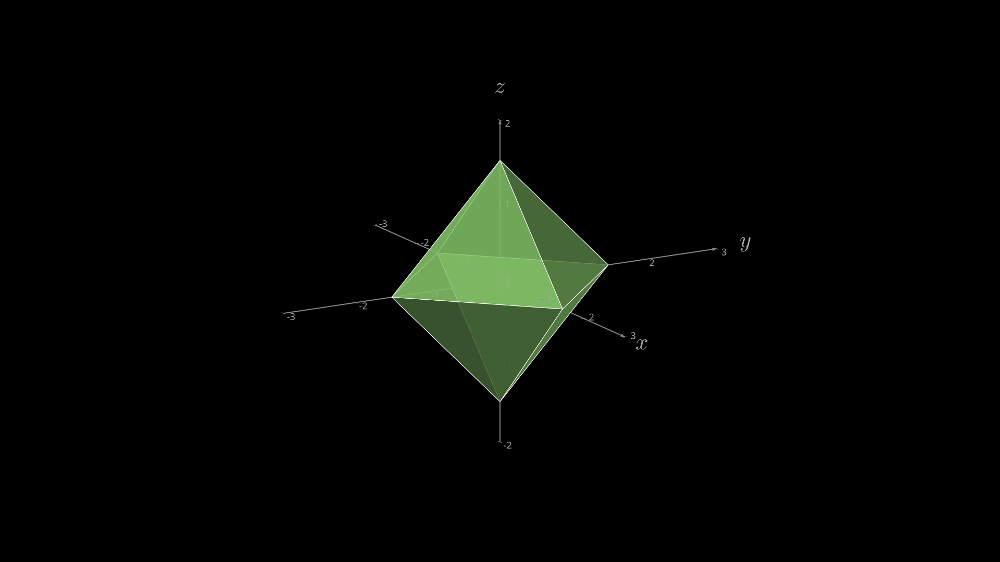
"""Octahedron on ThreeDAxes.""" from vectormation.objects import * v = VectorMathAnim() v.set_background() axes = ThreeDAxes(x_range=(-3, 3), y_range=(-3, 3), z_range=(-2, 2)) faces = Octahedron(size=1.5, fill_color='#83C167') for face in faces: axes.add_surface(face) v.add(axes) v.show(end=0)
Icosahedron¶
- Icosahedron(cx=0, cy=0, cz=0, size=1.0, **kwargs)¶
Regular icosahedron (20 triangular faces).
- Parameters:
cx (float) – Centre x.
cy (float) – Centre y.
cz (float) – Centre z.
size (float) – Scale factor applied to vertex coordinates.
- Returns:
list[Surface]
Example: Icosahedron
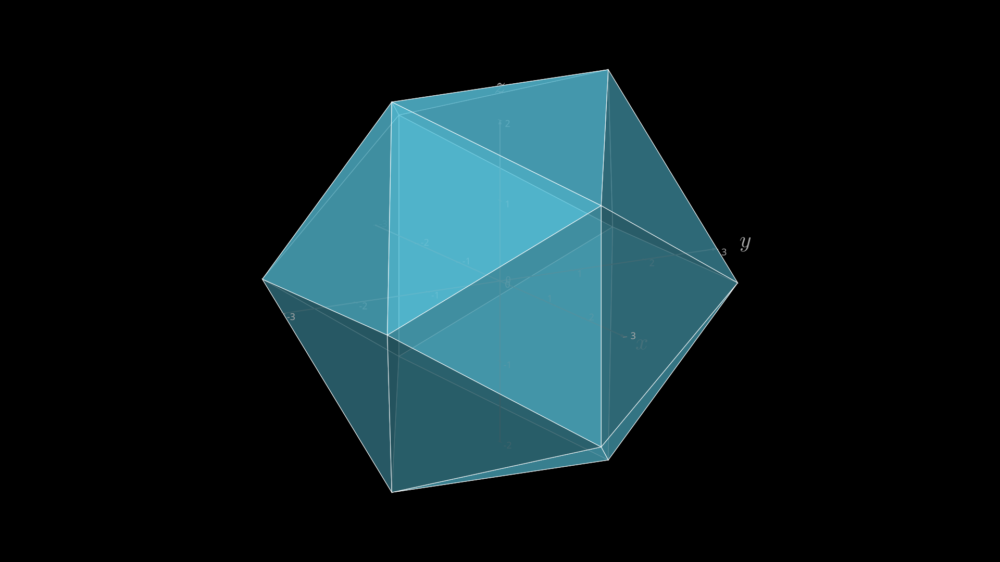
"""Icosahedron on ThreeDAxes.""" from vectormation.objects import * v = VectorMathAnim() v.set_background() axes = ThreeDAxes(x_range=(-3, 3), y_range=(-3, 3), z_range=(-2, 2)) faces = Icosahedron(size=1.5, fill_color='#58C4DD') for face in faces: axes.add_surface(face) v.add(axes) v.show(end=0)
Dodecahedron¶
- Dodecahedron(cx=0, cy=0, cz=0, size=1.0, **kwargs)¶
Regular dodecahedron (12 pentagonal faces).
- Parameters:
cx (float) – Centre x.
cy (float) – Centre y.
cz (float) – Centre z.
size (float) – Scale factor applied to vertex coordinates.
- Returns:
list[Surface]
Example: Dodecahedron
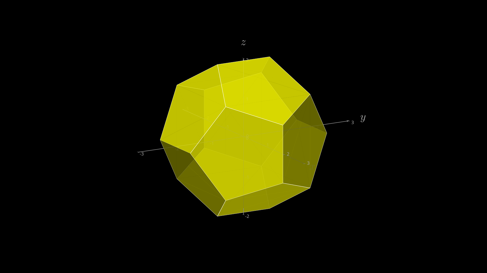
"""Dodecahedron on ThreeDAxes.""" from vectormation.objects import * v = VectorMathAnim() v.set_background() axes = ThreeDAxes(x_range=(-3, 3), y_range=(-3, 3), z_range=(-2, 2)) faces = Dodecahedron(size=1.2, fill_color='#FFFF00') for face in faces: axes.add_surface(face) v.add(axes) v.show(end=0)